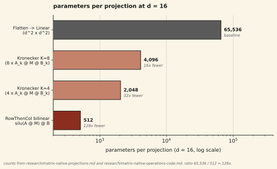

At matrix dimension d = 16, a RowThenCol bilinear projection — silu(A · M) · B with A, B ∈ ℝd×d — uses 2·d² = 512 parameters. The flattened equivalent — reshape M to a d²-dim vector and apply a d² × d² Linear layer — uses d⁴ = 65,536 parameters. The ratio is 128×. The same structural argument gives 32× at Kronecker K = 4 and 16× at Kronecker K = 8. This is a per-layer claim at one matrix dimension. It is not a claim that matrix operations are better at matched compute: the RowThenCol projection is O(d³) per step while the flattened Linear is O(d⁴) only because the layer carries d⁴ parameters, and the per-parameter efficiency comes at a per-step FLOP constant we expect memory bandwidth and kernel launch overhead to eat much of on an H100; we have not measured the realized speedup (see Limitations). The allocation consequence at our scale is that in an 8-layer Matrix Thinker at d = 32 the 8 thinking layers occupy ~4% of the parameter budget while embeddings and output head occupy the rest; at byte-level d = 16 (Run 19, 218K total parameters) the thinking layers expand to ~33% of the budget as the embedding table shrinks. The structural efficiency is useful where parameters are scarce and compute is not the binding constraint.
01Background
Per-layer parameter efficiency has a long history in structured linear algebra. Tensor decompositions cut parameters by factoring a weight tensor into a product of smaller tensors. Low-rank adaptation approaches restrict gradient updates to a rank-r subspace of a full weight matrix. Block-diagonal and other structured matrix families cut parameters by imposing structural sparsity. Parameterized Hypercomplex Multiplication (PHM) from Zhang et al. 2021 [3] expresses a linear layer as a sum of Kronecker products and reduces parameters by a factor of n at cost of an n-way Kronecker sum. Bilinear pooling from the fine-grained visual recognition literature uses outer products to produce second-order features with far fewer parameters than the full quadratic expansion would need.
The common structure across these methods is that a linear map from ℝm to ℝn that would cost m · n parameters is replaced with a factored form whose parameter count scales sub-linearly in m · n. The catch is that the factoring constrains the map: not every m × n matrix can be represented as a low-rank product or a sum of Kronecker terms, so there is a capacity ceiling the full dense layer does not have. The useful regime is the one where the constrained class is expressive enough for the task and the parameter budget is the binding constraint.
Matrix-valued token representations change the unit of computation from a d-dim vector to a d × d matrix. The natural "linear layer" in this setting is a map from one d × d matrix to another. If the matrix is immediately flattened, the layer becomes a standard d² × d² dense Linear with d⁴ parameters. If the matrix is kept as a matrix and the layer is built from left- and right-multiplications, the layer uses two d × d parameter tensors for 2 · d² total parameters per projection. The two are not interchangeable maps — the second is a constrained subspace of the first — but the second is what the rest of the Matrix Thinker stack is already wired to consume through row-wise and column-wise attention, RowThenCol projections, and bilinear output heads. The question this note addresses is how large the per-layer parameter gap is and what the allocation consequence looks like when the gap is applied to an 8-layer stack.
02Setup
Parameter and FLOP counts in this note come from two internal project research notes (research/matrix-native-projections.md and research/matrix-native-operations-code.md); these are internal project research notes, not external peer-reviewed sources. FLOP counts in this note use the 2-FLOP-per-fused-multiply-add convention from research/matrix-native-projections.md; the alternative 1-FLOP-per-FMA convention (used in research/matrix-native-operations-code.md) gives half the absolute numbers but preserves the 8× ratio.
The two projections
We compare two ways to realize a learned map from a d × d input matrix M to a d × d output matrix, at d = 16:
- Flattened Linear. Reshape M to a d²-dim vector, apply a dense Linear of shape (d², d²), reshape back. Parameter count: d² · d² = d⁴ = 65,536. This is the map that can realize any linear function from ℝd² to ℝd². It is also what a standard transformer's (d_model, d_model) Linear layer becomes if we take d_model = d² and treat the d²-dim vector as a flattened matrix.
- RowThenCol bilinear. Keep M as a matrix. Apply two learned d × d parameters A and B:
A @ M is a learned row mixing (each column of the output is a learned linear combination of the columns of M, via the row weights of A). silu is applied pointwise. (silu(A @ M)) @ B is a learned column mixing. The composition is a nonlinear sandwich with parameter count 2 · d² = 512. This is the projection we use for Q, K, V, output, and the data-dependent Δ and Γ inside the multiplicative thinking layer. Source: matrix-thinking/src/matrix_thinker.py, class RowThenColProjection.M_out = silu(A @ M) @ B
For completeness we also include two Kronecker variants from the project's earlier research on matrix-native projections:
- Kronecker K=4. M_out = Σk=1..4 Ak · M · Bk. Four sum terms, two matrices per term (Ak, Bk), d² params per matrix: 2·K·d² = 2·4·256 = 2,048. Source: [1].
- Kronecker K=8. Same form with eight terms: 2·K·d² = 2·8·256 = 4,096 at d = 16.
Parameter counts
The four numbers are fixed by the projection form and the matrix dimension. They are not run-dependent:
| projection | form | params at d=16 | vs flattened |
|---|---|---|---|
| Flattened Linear | d² × d² dense | 65,536 | 1.0× |
| Kronecker K=8 | Σk=1..8 Ak · M · Bk | 4,096 | 16× fewer |
| Kronecker K=4 | Σk=1..4 Ak · M · Bk | 2,048 | 32× fewer |
| RowThenCol bilinear | silu(A · M) · B | 512 | 128× fewer |
Per-step FLOPs, so nothing is hidden
The parameter efficiency does not come for free. At d = 16 the per-step FLOP counts for the same four projections are:
| projection | params | flops (fwd) | flops / param |
|---|---|---|---|
| Flattened Linear | 65,536 | 131,072 | 2 |
| Kronecker K=8 | 4,096 | 131,072 | 32 |
| Kronecker K=4 | 2,048 | 65,536 | 32 |
| RowThenCol bilinear | 512 | 16,384 | 32 |
The "FLOPs per parameter" column is the important one to read. A flattened Linear spends each parameter once per token per step: two multiply-adds per scalar weight. A matrix-native projection uses each scalar parameter d times during the sandwich computation, because A · M is an inner product against every column of M. At d = 16 that is a 16× reuse factor, which cancels one factor of 16 from the 128× parameter gap. The other factor of 16 survives as a genuine per-step FLOP reduction. RowThenCol at d = 16 therefore costs 8× fewer FLOPs per step, not 128× fewer FLOPs per step. The parameter efficiency and the compute efficiency are the same sign but different magnitudes, and the compute efficiency is the smaller of the two.
03Results
The parameter gap at d = 16 is 128× between the RowThenCol bilinear projection and the flattened Linear equivalent. A bar chart on log scale makes the four families visible on one axis:

Parameter allocation at the whole-model level
The per-layer efficiency compounds across the 8 thinking layers in a Matrix Thinker backbone. At d = 32 with a 50K vocab BPE tokenizer, the parameter budget breaks down roughly as:
| component | params (mat_dim=32, BPE vocab) | share |
|---|---|---|
| Embedding tables (outer-product, 2 · V · d) | ~3.2M | ~63% |
| 8 thinking layers (attention + multiplicative) | ~0.2M | ~4% |
| Output head (MultiProbeHead, K=32) | ~1.6M | ~31% |
At byte-level d = 16 the embedding table shrinks by a factor of ~100 (from 2 · 50{,}257 · 32 to 2 · 256 · 16, or about 8K parameters), and the thinking layers claim a much larger share of the total:
| run | total params | thinking-layer share | notes |
|---|---|---|---|
| Run 12 (d=32, 50K BPE) | 5.16M | ~4% | 8 layers; 2.19B OpenR1-Math tokens |
| Run 19 (d=16, byte-level) | 218K | ~33% | 12 layers; 539M bytes |
04Discussion
What this unlocks at small scale is that the thinking backbone can be cheap enough to disappear from the parameter budget entirely when the embedding table is large. At d = 32 with a 50K BPE vocab, the 8 thinking layers of a Matrix Thinker cost ~0.2M parameters out of ~5.16M total. Adding a ninth thinking layer costs ~25K parameters: a 0.5% increase in the total model size. The iterative-refinement loop in the Matrix Thinker further reuses the same thinking layers T = 8 times per forward pass, which amortizes the per-layer parameter cost across 8 applications for free — an iterated backbone at d = 32 with 8 shared layers effectively has 64 layer-applications at the cost of 8 layers' worth of parameters. The per-layer parameter gap is what makes that reuse pattern feasible without growing the model into the hundreds of millions of parameters.
The byte-level regime is where the gap starts to bind directly. At byte vocabulary of 256, the embedding table stops dominating, and the per-layer budget for the backbone is the binding constraint on how deep a model can be at a given total parameter count. Run 19 is a 218K-parameter byte-level model with 12 thinking layers, and the thinking layers are 33% of the model — a share that would be impossible with a flattened-Linear per-layer cost of d⁴ = 65,536 parameters per layer per projection. A 12-layer flattened-Linear backbone at d = 16 with four projections per layer would cost 12 · 4 · 65{,}536 ≈ 3.1M parameters for the backbone alone, fifteen times the total Run 19 model. The efficiency is what makes byte-level matrix thinking feasible at under 1M total parameters.
The counterpoint is that none of this argues matrix operations are better at matched compute. The per-step FLOP gap at d = 16 is 8×, and we expect memory bandwidth and kernel launch overhead to eat much of that on an H100; we have not measured the realized speedup (see Limitations). At matched FLOPs, the matrix approach loses by a large margin (EXPERIMENT_LOG.md Run 14: Matrix Thinker BPB 1.67 vs LoopFormer BPB 0.87 at the same 653K TFLOPs budget). The sibling notes on output head dynamics and the outer-product embedding describe where matrix operations hold up against vector baselines and where they do not. The honest statement is that matrix operations are a parameter-efficient way to express transformations on structured representations. They are useful where parameters are the scarce resource and compute is not, such as small models trained at modest scale, byte-level vocabularies, and deployment environments with a tight memory budget but ample FLOPs per parameter.
A related point about depth. If the parameter gap per layer is 128×, then at a fixed total parameter budget a matrix-thinking backbone can afford to be roughly 128× deeper than a flattened-Linear backbone at the same d. At small scale this is the trade that opens up: more layers or more iterative-refinement steps at matched total parameters. Whether the extra depth translates into downstream quality is a separate question — one the "just add layers" lesson in CLAUDE.md warns us about — and the parameter efficiency result does not settle it.
05Limitations
- One matrix dimension tested. All numbers in this note are at d = 16. The parameter ratio scales as d⁴ / (2 · d²) = d² / 2, so at d = 32 the ratio would be 512× and at d = 8 it would be 32×. The 128× headline is specific to d = 16. We report it at that dimension because that is where we have the matching FLOP count from the project's earlier matrix-native-projections research. The general statement is d² / 2.
- Per-step FLOP savings do not fully materialize on H100. The theoretical FLOP gap at d = 16 is 8×, but in practice the RowThenCol projection is memory-bandwidth bound rather than compute-bound, and kernel launch overhead for the small per-layer tensors eats most of the savings. We have not measured the exact realized speedup. A torch.compile-based fused kernel for the sandwich operation is a natural follow-up that might close the gap between theoretical and realized FLOP savings.
- Capacity ceiling. A RowThenCol projection is a constrained subspace of the flattened Linear. Not every d² × d² linear map can be written as a sandwich with silu in the middle. The unsaturated sandwich A · M · B is equivalent to the linear map (Bᵀ ⊗ A) · vec(M), a Kronecker-structured linear operator living in a d²-parameter subspace of the full d⁴-parameter Linear space. The SiLU nonlinearity between A · M and the right multiplication by B is what breaks the pure-linear structure and lets the composition approximate a larger function class; we have not quantified how close the saturated version gets to the full Linear. The parameter efficiency comes at an expressivity cost that the numbers in this note do not quantify. Whether the constrained subspace is sufficient for language modeling at scale is what the downstream experiments in the sibling notes attempt to measure, and the current evidence is mixed: RowThenCol backbones lose to flat-vector baselines at matched FLOPs but win at the embedding layer under specific output-head conditions.
- Parameter counts assume the thinking layers are shared across iterations. The ~4% thinking-layer share at d = 32 is for 8 thinking layers applied T = 8 times with weight sharing, which is how the Matrix Thinker uses them. An unshared 8-layer backbone would double the thinking-layer share; a shared backbone with T = 16 iterations would keep it at 4%. The allocation number is specific to the Matrix Thinker architecture and should not be read as a general statement about 8-layer transformers.
- Single-seed downstream claims. The allocation numbers cited from Run 12 and Run 19 come from single training runs (n = 1 each). The parameter counts themselves are deterministic functions of the architecture hyperparameters and do not depend on the seed, but the comparative framing in Discussion that appeals to Run 14 and the sibling notes rests on single-seed downstream evidence. We inherit the single-seed caveat from those notes.
06Future work
Three tests that would strengthen or qualify this result:
- Matched-capacity comparison against structured-linear baselines. The current comparison is RowThenCol bilinear vs fully flattened Linear. The more honest baseline is a matched-capacity structured linear layer — a block-diagonal or other structured matrix family, low-rank bottlenecks of rank r with r · d² parameters, or PHM with n = 4. If RowThenCol beats those at matched parameters on a downstream metric, the structural case is stronger. If it loses, the "128× fewer than flattened Linear" framing overstates the practical efficiency gain.
- Compile-time optimization of the matrix sandwich. The per-step FLOP savings at d = 16 are 8× in theory but much smaller in practice. A fused kernel for silu(A · M) · B that holds A and B in registers and streams M through would close the gap between the theoretical and realized speedup. torch.compile with fullgraph=True and fixed shapes is the cheapest way to try this, and the H100 setup already supports it.
- Scale sweep on d. The parameter ratio is d² / 2, which grows quadratically with the matrix dimension. At d = 64 the ratio is 2048× per layer. At small d the parameter savings might be outweighed by the expressivity cost of the constrained subspace; at large d the savings dominate. Running the same comparison across d ∈ {8, 16, 32, 64} with the downstream task held fixed would tell us where the trade flips.
07Reproducibility
The RowThenCol projection module lives at matrix-thinking/src/matrix_thinker.py, class RowThenColProjection (lines 39–49):
class RowThenColProjection(nn.Module):
"""silu(A @ M) @ B — nonlinearity between left and right multiply."""
def __init__(self, d):
super().__init__()
self.A = nn.Parameter(torch.eye(d) + 0.02 * torch.randn(d, d))
self.B = nn.Parameter(torch.eye(d) + 0.02 * torch.randn(d, d))
def forward(self, M):
return torch.einsum('bsij,jk->bsik',
F.silu(torch.einsum('ij,bsjk->bsik', self.A, M)),
self.B)Two d × d parameter tensors, 2 · d² = 512 trainable scalars at d = 16. A standard nn.Linear(256, 256) for comparison has 256 · 256 = 65{,}536 weight parameters (ignoring bias), giving the 128× ratio.
Source files for the parameter and FLOP counts used in this note:
- research/matrix-native-projections.md: parameter and FLOP table at d = 16 for Flatten→Linear, Bilinear K=1, Kronecker K=4, Kronecker K=8. Internal project research note, not an external peer-reviewed source.
- research/matrix-native-operations-code.md: extended parameter/FLOPs table including Householder and multi-head bilinear variants. Internal project research note, not an external peer-reviewed source.
- matrix-thinking/H100_SETUP.md: parameter allocation at d = 32 in an 8-layer Matrix Thinker — embeddings ~63%, 8 thinking layers ~4%, output head ~31%.
- EXPERIMENT_LOG.md: Run 14 (FLOPs-matched comparison, Matrix Thinker BPB 1.67 vs LoopFormer BPB 0.87) and Run 19 (byte-level d = 16, 218K parameters, 12 thinking layers, ~33% thinking-layer share).
- pebble-ai-site/assets/plots/generate_parameter_efficiency.py: the script that produced the figure in this note. No training involved — the script renders fixed constants from the source files listed above.
References
- pebble project (2026). Matrix-native projections — research results. Internal project research note at research/matrix-native-projections.md, not an external peer-reviewed source. Parameter and FLOP comparison at d = 16.
- pebble project (2026). Matrix-native operations — working code and repo findings. Internal project research note at research/matrix-native-operations-code.md, not an external peer-reviewed source. Extended parameter/FLOPs table.
- Zhang, A., Tay, Y., Zhang, S., Chan, A., Luu, A. T., Hui, S. C., & Fu, J. (2021). Beyond Fully-Connected Layers with Quaternions: Parameterizations of Hypercomplex Multiplications (PHM). ICLR 2021. arXiv:2102.08597